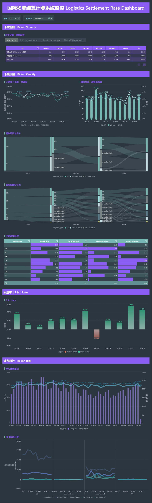

BUSINESS INTELLIGENCE PORTFOLIO
涵盖电商增长分析、内容平台运营监控、教育行业经营分析与物流结算监控系统。
构建完整增长漏斗，结合 A/B 实验结果与异常检测形成自动化策略建议。
聚焦日增粉、掉粉、粉丝来源与视频趋势，细节视图可在预览大图中滚动查看。
围绕业务核心指标搭建经营分析闭环，实现多层级经营表现对比。

覆盖结算计费链路核心监控，聚焦异常识别、指标追踪与结算过程透明化。